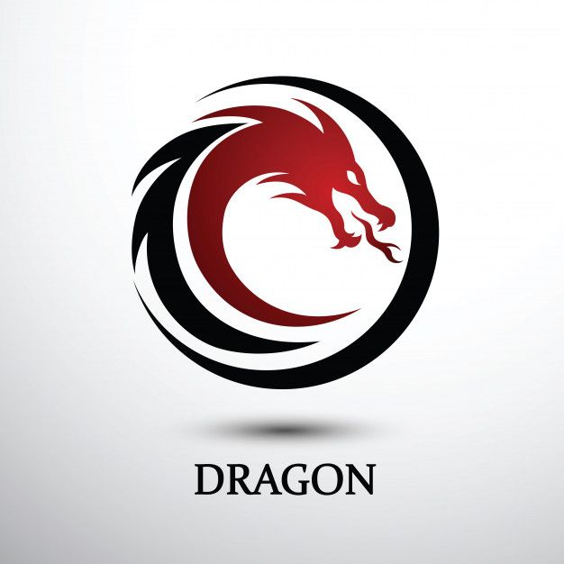

китайския автопроизводители
Обслуживание автомобилей китайского производства имеет свои особенности, которые могут отличаться от обслуживания автомобилей других стран. Вот некоторые ключевые аспекты, которые стоит учитывать:
Обслуживание китайских автомобилей может представлять собой особую задачу, но при правильном подходе и внимании к деталям это вполне осуществимо.
Однако стоит отметить, что ряд китайских автопроизводителей активно работает над улучшением качества и повышением конкурентоспособности. Некоторые модели уже начали завоевывать популярность на международных рынках благодаря своему соотношению цены и качества.
Обслуживание
- Запчасти и расходники:
- Запчасти на китайские автомобили могут быть как оригинальными, так и аналоговыми. Важно выбирать качественные детали, так как их доступность и цены могут варьироваться.
- Некоторые модели могут иметь ограниченный запас запчастей, особенно если они не очень популярны на рынке.
- Сервисные центры:
- Не все сервисные центры могут иметь опыт обслуживания китайских автомобилей, поэтому может потребоваться поиск специализированных мастерских.
- Однако с увеличением популярности китайских марок количество профессиональных сервисов растет.
- Регулярное обслуживание:
- Как и для любых автомобилей, регулярные технические осмотры и замена масла, фильтров, тормозных колодок и других расходных материалов обязательны для поддержания автовыдающего состояния.
- Рекомендуется придерживаться графика обслуживания, указанного в техническом руководстве вашего автомобиля.
- Электроника и системы:
- Некоторые китайские автомобили могут быть оснащены новыми технологиями и системами, которые требуют специализированного оборудования для диагностики и ремонта.
- Обратите внимание на настройки электрики и софта, так как для некоторых моделей может потребоваться специфическое программное обеспечение.
- Гарантия:
- Уточните условия гарантии при покупке автомобиля. Некоторые производители предлагают расширенные гарантии на определенные компоненты.
- При обслуживании важно сохранять документы о всех работах, чтобы не потерять гарантию.
пример
Запчасти и расходники.
Когда дело касается запчастей для китайских автомобилей, выбор оригинальных и аналоговых деталей может оказаться непростой задачей.
- Оригинальные запчасти: Это лучший вариант с точки зрения качества, однако их цена может быть значительно выше.
- Аналоговые запчасти: Более доступные по цене, но выбор необходимо делать осознанно. Обязательно обращайте внимание на отзывы о производителе.

Сервисные центры.
Не каждый сервисный центр может похвастаться опытом обслуживания китайских автомобилей.
- Специализированные сервисы: Рекомендуем искать мастерские, которые работают именно с китайскими марками. Это обеспечит качество обслуживания и понимание специфических нюансов.
- Качество сервиса: Перед тем как выбрать СТО, полезно ознакомиться с отзывами других владельцев или попросить рекомендации у знакомых.
. Регулярное обслуживание
Как и для любого автомобиля, регулярное техническое обслуживание — основа надежности.
- Замена масла и фильтров: Эти процедуры должны выполняться в соответствии с графиком, указанным в руководстве по эксплуатации.
- Тормозные колодки и другие расходные материалы: Их также следует проверять и заменять в соответствии с рекомендациями.
требования обслуживания
- Регулярные технические осмотры.
Каждый автомобиль должен проходить регулярные технические осмотры в соответствии с графиком, установленным производителем. Это может включать в себя:
- Проверку и замену моторного масла и масляного фильтра.
- Замена воздушного и топливного фильтров.
- Проверка тормозной системы.
- Проверка состояния и установки колес (шины, диски, тормозные колодки).
- Качество запчастей.
Используйте качественные запчасти и расходные материалы:
- При покупке запчастей предпочтение следует отдавать оригинальным или сертифицированным аналогам.
- Следите за сроком годности расходных материалов, таких как масла и фильтры.
пример
Следование этим требованиям поможет обеспечивать надежность и долговечность вашего китайского автомобиля.
При наличии вопросов лучше всего проконсультироваться с профессионалами или обратиться к официальным представителям бренда для получения актуальной информации и рекомендаций.